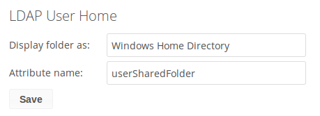
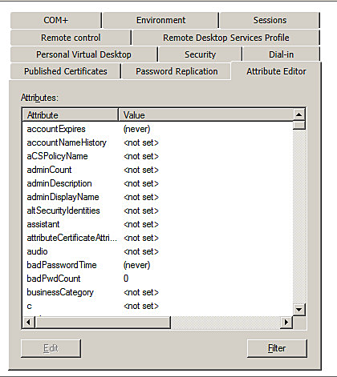
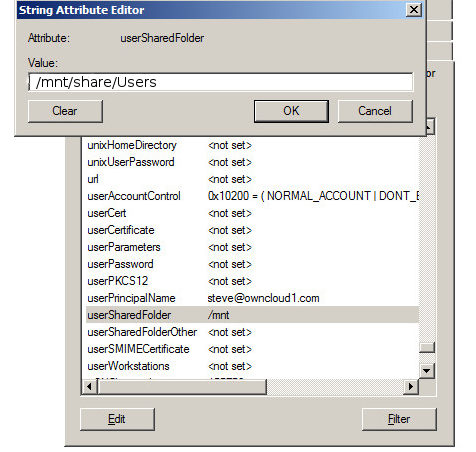

LDAP Home Connector¶
The LDAP Home Connector App enables you to configure your ownCloud server to display your users’ Windows home directories on their Files pages, just like any other folder. Typically, Windows home directories are stored on a network server in a root folder, such as Users, which then contains individual folders for each user.
You must already have the LDAP app enabled and a working LDAP/Active Directory configuration in ownCloud.
Next, configure the root Windows home directory to be mounted on your ownCloud server. Then use the LDAP Home Connector and LDAP app to connect it to ownCloud.
Mount Home Directory¶
Create an entry in /etc/fstab for the remote Windows root home
directory mount. Store the credentials to access the home directory in a
separate file, for example /etc/credentials, with the username and
password on separate lines, like this:
username=winhomeuser
password=winhomepassword
Then add a line like this to /etc/fstab, substituting your own server
address and filenames:
//192.168.1.58/share /mnt/share cifs credentials=/etc/credentials,uid=33,gid=33
Configure the LDAP Home Connector¶
Enable the LDAP Home Connector app. Then go to the LDAP Home Connector form on your ownCloud admin page. In the Display folder as: field enter the name as you want it to appear on your users’ File pages.
Then in the Attribute name: field enter the LDAP attribute name that will contain the home directory. Use any LDAP attribute that is not already in use, then save your changes.
Configure the LDAP Server¶
In Active Directory, open the user profile. Scroll to the Extensions section and open the Attribute Editor tab
Scroll to the attribute being used (UserSharedFolder in this instance), and click Edit. Enter the users home directory.
Save your changes, and you are finished.